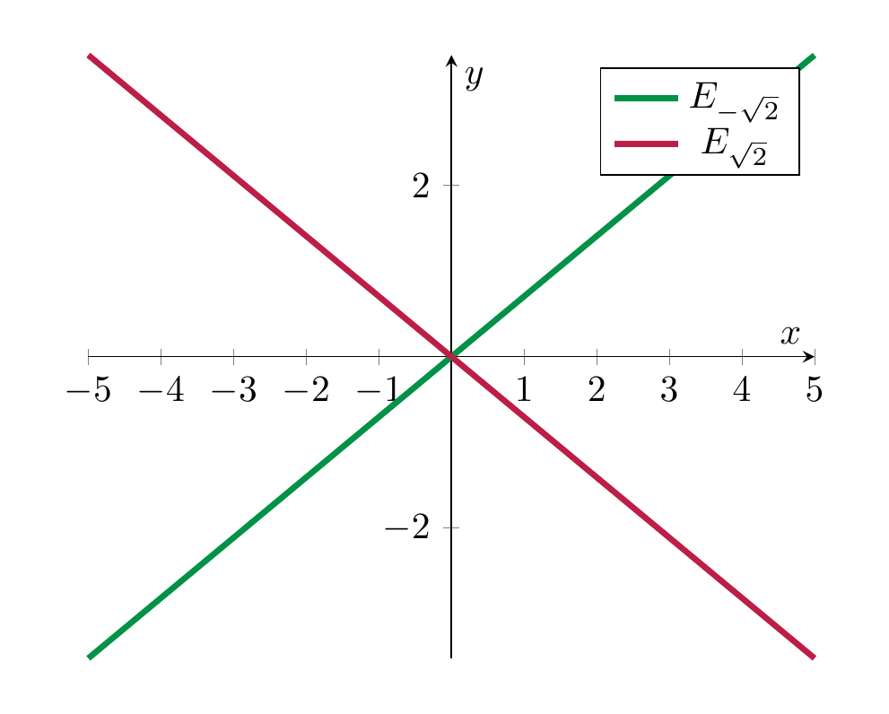

Eigenvalues and Eigenvectors¶
Eigenvalues and eigenvectors are an extremely useful concept of linear algebra. Coupled with certain numerical considerations, which are (only slightly!) beyond the scope of this course, eigenvalues have been used, for example, in the early PageRank algorithm employed by Google.
The overall idea of eigenvalues and eigenvectors is this: square matrices of the form
(i.e., the only non-zero entries are on the main diagonal; such matrices are called diagonal matrices) are particularly simple to comprehend and to use in computations. For example, products of the can be computed easily:
i.e., the (diagonal) entries can just be multiplied one by one, something that clearly goes wrong for products of general matrices. Eigenvalues and eigenvectors can, in certain cases, be used to reduce computations for general matrices to those for diagonal matrices.
Definitions¶
Definition 6.1
Let \(A\) be a square matrix. A real number \(\lambda\) is called an eigenvalue of \(A\) if there exists a nonzero vector \(v \in {\bf R}^n\) that satisfies the equation
Such a vector \(v\) is called an eigenvector for the eigenvalue \(\lambda\). In other words, multiplying the matrix \(A\) by the vector \(v\) results in a scaled version of \(v\), where the scaling factor is the eigenvalue \(\lambda\).
Likewise, for a linear map \(f : V \to V\), \(\lambda\) is an eigenvalue if there is \(v \in V, v \ne 0\) such that
(6.2)
We consider some of the linear maps \(f : {\bf R}^2 \to {\bf R}^2\) of §Subsection 4.2.1.
Example 6.3
If \(f\) is the reflection along, say, the \(x\)-axis, i.e., \(f(x, y) = (x, -y)\), then reads
i.e., \(x = \lambda x\) and \(-y = \lambda y\). The first equation holds if \(x = 0\) and \(\lambda\) arbitrary or if \(\lambda = 1\) and \(x\) arbitrary. Similarly, the second forces \(y = 0\) or \(\lambda = -1\). Since, by definition, we have \((x, y) \ne (0, 0)\), we cannot have both \(x = 0\) and \(y = 0\). If \(x \ne 0\), then \(\lambda = 1\), which forces \(y = 0\). If \(x = 0\), then \(y \ne 0\) and therefore \(\lambda = -1\). Thus, there are two eigenvalues and eigenvectors are as follows:
-
\(\lambda = 1\), with eigenvectors \((x, 0)\) for arbitrary \(x \in {\bf R}\),
-
\(\lambda = -1\), with eigenvectors \((0, y)\) for arbitrary \(y \in {\bf R}\).
Before going on, we make the following observation, for any \(n \times n\)-matrix \(A\). The equation
can be rewritten as
Here we have used standard properties of matrix multiplication (Lemma 4.60). We seek a non-zero vector \(v\) satisfying this condition. Such a vector exists if and only if \(A - \lambda {\mathrm {id}}\) is not invertible.
Example 6.4
We consider the shearing matrix \(A = \left ( \begin{array}{cc} 1 & r \\ 0 & 1 \end{array} \right )\), where we assume \(r \ne 0\) (otherwise \(A = {\mathrm {id}}\)). We check the invertibility of the matrix:
It suffices to compute the determinant (Theorem 5.15):
This is zero precisely if \(\lambda = 1\), i.e., \(\lambda = 1\) is the only eigenvalue of \(A\). Eigenvectors for this eigenvalue are those vectors such that
i.e., \(\left ( \begin{array}{c} ry \\ 0 \end{array} \right ) = \left ( \begin{array}{cc} 0 & r \\ 0 & 0 \end{array} \right ) \left ( \begin{array}{c} x \\ y \end{array} \right ) = 0\). Since we have assumed \(r \ne 0\), this implies \(y = 0\), and \(x\) is arbitrary. Thus, the eigenvectors for \(\lambda = 1\) are of the form \(\left ( \begin{array}{c} x \\ 0 \end{array} \right )\) for \(x \in {\bf R}\).
The characteristic polynomial¶
Definition and Lemma 6.5
For \(A \in {\mathrm {Mat}}_{n \times n}\), the function
is a polynomial of degree \(n\). It is called the characteristic polynomial of the matrix \(A\). A real number \(\lambda\) is an eigenvalue of \(A\) if and only if
For example, for \(A = \left ( \begin{array}{cc} 1 & r \\ 0 & 1 \end{array} \right )\), \(\chi(t) = (t-1)^2\).
Example 6.6
We compute the eigenvalues of \(A = \begin{pmatrix} 2 & -1 \\ 4 & -3 \end{pmatrix}\) using the characteristic polynomial:
The equation \(\chi_A(t) = 0\) solves as
i.e., the eigenvalues are \(t_1 = -2\), \(t_2 = 1\).
Example 6.7
We consider the rotation matrix \(A = \left ( \begin{array}{cc} \cos r & -\sin r \\ \sin r & \cos r \end{array} \right )\). We have:
-
if \(r = \dots, -4\pi, -2\pi, 0, 2\pi, \dots\) (i.e., a rotation by a multiple of 360\(^\circ\), i.e., no rotation at all), then \(A = {\mathrm {id}}_2\), and the only eigenvalue is \(\lambda = 1\), and any vector \((x,y) \in {\bf R}^2\) is an eigenvector.
-
if \(r = \dots, -3\pi, -\pi, \pi, 3\pi, \dots\) (i.e., a rotation by 180\(^\circ\) (plus an irrelevant multiple of 360\(^\circ\))), the only eigenvalue is \(\lambda = -1\), and again any vector in \({\bf R}^2\) is an eigenvector,
-
in all other cases, i.e., if the rotation is not by \(0^\circ\) or by \(180^\circ\), there are no eigenvalues (and therefore no eigenvectors).
These statements are clear geometrically: for a rotation other than the special cases, for any vector \(v \in {\bf R}^2\) we have that the rotated vector \(Av\) lies on a different line, so that it cannot be an eigenvector. To confirm this algebraically, we compute its characteristic polynomial:
We solve this for \(t\) using the usual formula:
We have \(0 \le \cos r \le 1\), and \(\cos r = 1\) if and only if \(r\) is a multiple of \(\pi\) (cf. §Chapter B). Thus the term inside the square root is zero in this case, in all other cases it is strictly negative, so that the equation \(\chi(t) = 0\) has no solution.
The non-existence of eigenvalues can be salvaged by working with complex numbers, instead of real numbers.
Theorem 6.8
(Fundamental theorem of algebra, cf. also §Section 1.2 for further discussion) For every non-constant polynomial
where the coefficients \(a_0, \dots, a_n\) are complex numbers (for example, they can be real numbers), there exists a complex number \(z \in {{\bf C}}\) such that
This theorem is famous for the number of entirely different proofs. A completely elementary proof fitting on about two pages is given in .
Example 6.9
Consider the rotation matrix
describing a (counter-clockwise) rotation by \(90^\circ\). Its characteristic polynomial
does not have a real zero, i.e., for all real numbers \(r\), \(\chi_A(r) \ne 0\). However, the complex number \(i\), the imaginary unit, which satisfies \(i^2 = -1\) is a complex zero. In addition, \(-i\), which also satisfies \((-i)^2 = -1\) is another complex zero.
It is therefore helpful to consider the concepts of linear algebra not only for real matrices, but for complex matrices. All of the concepts and theorems that we have encountered in this course continue to hold for complex matrices, complex vector spaces etc.
Corollary 6.10
Any complex square matrix \(A \in {\mathrm {Mat}}_{n \times n}\) has at least one (complex) eigenvalue. In particular, any real square matrix has at least one complex eigenvalue (but it may not have a real eigenvalue).
Eigenspaces¶
In the above examples, the set of all eigenvectors for a given eigenvalue has a particularly nice shape. This is a general phenomenon:
Definition and Lemma 6.11
Let \(A \in {\mathrm {Mat}}_{n \times n}\) be a square matrix and \(\lambda \in {\bf R}\) a fixed real number. The set
is a subspace of \({\bf R}^n\). It is called the eigenspace of \(A\) with respect to \(\lambda\).
Proof. The equation \(Av = \lambda v\) is equivalent to \((A - \lambda {\mathrm {id}})v = 0\), i.e., we have \(E_\lambda = \ker (A - \lambda {\mathrm {id}})\). This is a subspace of \({\bf R}^n\) by Proposition 4.23. ◻
Remark 6.12
If \(\lambda\) above is not an eigenvalue, then \(E_\lambda = \{ 0 \}\), i.e., the zero vector is the only one satisfying \(Av = \lambda v\).
If \(\lambda\) is an eigenvalue, then \(E_\lambda\) consists of all the eigenvectors for the eigenvalue \(\lambda\), together with the zero vector (which by definition is not an eigenvector).
Example 6.13
We compute the eigenspaces of the matrix \(A = \left ( \begin{array}{cc} 0 & -1 \\ -2 & 0 \end{array} \right )\). Its characteristic polynomial is
Its zeros, i.e., the eigenvalues of \(A\) are \(\lambda_{1/2} = \pm \sqrt 2\). The eigenspace for \(\sqrt 2\) is the solution space of the homogeneous system
We solve this by reducing the matrix \(B\) to row-echelon form
Thus, \(y\) is a free variable and \(x = - \frac{\sqrt 2}2 y\). Thus \(E_{\sqrt 2}\) has dimension 1, a basis vector is \((-\frac{\sqrt 2}2, 1)\). Similarly, one computes the eigenspace for \(\lambda = -\sqrt 2\):
so the eigenspace \(E_{-\sqrt 2}\) is again one-dimensional, and a basis vector is \((\frac{\sqrt 2}2, 1)\). Here is a plot showing the two eigenspaces: the map \(v \mapsto Av\) will stretch the vectors in \(E_{\sqrt 2}\) by a factor of \(\sqrt 2\), while those on the eigenspace \(E_{-\sqrt 2}\) will be flipped and stretched by a factor of \(\sqrt 2\):

Diagonalizing matrices¶
As was mentioned above, diagonal matrices are particularly easy to compute with. This raises the question if (and how) it is possible to “bring” a given matrix \(A\) into such an easy form.
Definition 6.14
A square matrix \(A\) is called diagonalizable if there is an invertible matrix \(P \in {\mathrm {Mat}}_{n \times n}\) such that
where \(D=\left ( \begin{array}{ccc} d_{11} & {} & 0 \\ {} & \ddots & {} \\ 0 & {} & d_{nn} \end{array} \right )\) is a diagonal matrix.
An example showing the relevance of this notion is this: in the context of differential equations, one needs to compute the exponential of a square matrix \(A\), which is defined as
Here \(A^3 = A \cdot A \cdot A\) etc. Instead of computing all these powers of \(A\) one after another, one can use the above definition: if \(A\) is diagonalizable, i.e., \(PAP^{-1} = D\), then \(A = (P^{-1}P)A(P^{-1}P) = P^{-1}(PAP^{-1})P = P^{-1}DP\). Then,
etc. Computing the powers of \(D\), as opposed to those of \(A\) is easy: one just needs to raise the diagonal entries to the corresponding power.
Method 6.15
In order to diagonalize a square matrix \(A \in {\mathrm {Mat}}_{n \times n}\), i.e., to determine whether \(P\) above exists, and to compute \(D\), one proceeds as follows:
-
Compute the eigenvalues of \(A\), for example by finding the zeros of the characteristic polynomial. Denote them by \(\lambda_1, \dots, \lambda_k\). Denote the eigenspaces by \(E_{\lambda_k}\).
-
The matrix \(A\) is diagonalizable precisely if
i.e., if the dimensions of the eigenspaces sum up to the size of the matrix \(A\).
- In this event, one may choose \(P\) to be the \(n \times n\)-matrix whose columns are the basis vectors of all the eigenspaces (for the various eigenvalues \(\lambda_1, \dots, \lambda_k\)). The matrix \(D\) is the diagonal matrix whose diagonal entries are
One can show that above, one always has \(k \le n\). One does this by proving that the sum of the subspaces \(E_{\lambda_1}, \dots, E_{\lambda_k}\) is a direct sum, so that
This implies the following:
Corollary 6.16
If an \(n \times n\)-matrix has \(n\) distinct eigenvalues, then it is diagonalizable.
Definition 6.17
Let \(A \in {\mathrm {Mat}}_{n \times n}\) be given. A basis \(v_1, \dots, v_n\) of \({\bf R}^n\) is called an eigenbasis for \(A\) if each \(v_i\) is an eigenvector (for a certain eigenvalue) of \(A\).
Lemma 6.18
For \(A \in {\mathrm {Mat}}_{n \times n}\) the following two statements are equivalent:
-
\(A\) is diagonalizable.
-
\(A\) admits an eigenbasis, i.e., there is an eigenbasis (of \({\bf R}^n\)) for \(A\).
One proves this by observing that if \(PAP^{-1}\) is a diagonal matrix, then \(P\) is a base-change matrix between the standard basis and an eigenbasis.
Example 6.19
The matrix \(A = \left ( \begin{array}{cc} 0 & -1 \\ -2 & 0 \end{array} \right )\) in Example 6.13 has two distinct eigenvalues, and is therefore diagonalizable (Corollary 6.16). An eigenbasis for \(A\) is
Example 6.20
We consider the shearing matrix
Its characteristic polynomial is \(\chi_A(t) = (1-t)^2\), whose only zero is \(t = 1\). Thus, \(A\) has this eigenvalue only: \(\lambda = 1\). We compute the eigenspace: consider the matrix \(B := A - \lambda {\mathrm {id}} = \left ( \begin{array}{cc} 0 & 1 \\ 0 & 0 \end{array} \right )\). Writing, as usual, \(v = \left ( \begin{array}{c} x \\ y \end{array} \right ) \in {\bf R}^2\), the space of solutions of the homogeneous system
is our eigenspace, namely
This space is 1-dimensional, and has a basis consisting of the (single) vector \((1,0)\). Thus, \(A\) is not diagonalizable.
Example 6.21
We continue the discussion of the rotation matrix \(A = \left ( \begin{array}{cc} 0 & -1 \\ 1 & 0 \end{array} \right )\). Its (complex) eigenvalues are \(\lambda_1 = i\), \(\lambda_2 = -i\). According to Corollary 6.16, \(A\) is diagonalizable. We compute the eigenspaces, where we regard \(A\) as a complex matrix:
If \(v = \left ( \begin{array}{c} z_1 \\ z_2 \end{array} \right )\), then
This means \(z_1 = i z_2\) from the second equation; the first is then also satisfied since \(-iz_1 - z_2 = -i(iz_2) - z_2=z_2-z_2 = 0\). Thus
i.e., as a complex vector space, \(E_i\) is 1-dimensional and a basis of it is the vector \((i,1)\).
Similarly,
Computing this leads to the linear system
This gives \(z_1 = -iz_2\), so that \(E_{-i} = \{(-iz, z) \ | \ z \in {{\bf C}}\}\), and a basis of it is the (single) vector \((-i, 1)\). Thus, the matrix \(P\) above is
Example 6.22
For \(A = \left ( \begin{array}{cc} 1 & 0 \\ 0 & 0 \end{array} \right )\), \(\lambda = 0\) is an eigenvalue (and \(\left ( \begin{array}{c} 0 \\ 1 \end{array} \right )\) an 0-eigenvector) and \(\lambda = 1\) is another eigenvalue (and \(\left ( \begin{array}{c} 1 \\ 0 \end{array} \right )\) an 1-eigenvector).
Definition 6.23
We say that two square matrices \(A, B \in {\mathrm {Mat}}_{n \times n}\) are similar if there is an invertible matrix \(P\) such that \(PAP^{-1} = B\).
The question whether a given matrix \(A\) is diagonalizable is a special case of the following more general question: given two square matrices \(A, B\), are they similar in the sense of the above definition?
Proposition 6.24
If \(A\) and \(B\) are similar, then the following holds:
-
\(\det A = \det B\),
-
\(\mathrm{tr} A = \mathrm{tr} B\) (the traces, see Exercise 4.24),
-
\(\chi_A(t) = \chi_B(t)\),
-
\(A\) and \(B\) have the same eigenvalues. The eigenspaces are related like so: if \(B=PAP^{-1}\), then
Proof. Let \(B=PAP^{-1}\) with \(P\) invertible. For the determinant, using multiplicativity of the determinant (Proposition 5.18):
For the trace, we use the statement proved in Exercise 4.24 (marked * below):
For the characteristic polynomial the argument is similar as for the determinant:
Hence \(A\) and \(B\) have the same characteristic polynomial, and therefore the same eigenvalues.
Finally, let \(\lambda\in{\bf R}\). If \(v\in E_\lambda(A)\), then \(Av=\lambda v\), so
hence \(Pv\in E_\lambda(B)\). Thus \(P(E_\lambda(A))\subseteq E_\lambda(B)\). Conversely, if \(w\in E_\lambda(B)\), then \(Bw=\lambda w\), and multiplying by \(P^{-1}\) gives
so \(P^{-1}w\in E_\lambda(A)\), i.e. \(w\in P(E_\lambda(A))\). Therefore \(E_\lambda(B)=P(E_\lambda(A))\). ◻
Conversely, it is not true that if the above conditions hold, then \(A\) and \(B\) are similar: The matrices
both have 0 as their only eigenvalue. The eigenspaces \(E_0(A)\) and \(E_0(B)\) are both 2-dimensional, but \(A\) and \(B\) are not similar, as one can see by observing that \(A^2 \ne 0\) while \(B^2 = 0\). And if \(B = PAP^{-1}\), then \(B^2 = PAP^{-1}PAP^{-1} = PA^2P^{-1}\) and likewise \(B^3 = PA^3P^{-1}\), giving a contradiction. A sufficient condition for similarity can be expressed in terms of the so-called Jordan normal form, which we will not discuss in this course.
Exercises¶
Exercise 6.1
(See Solution 6.6.1.) Is the following matrix diagonalizable?
Hint: you will find that the eigenvalues of \(A\) are among the numbers \(0, 1, 2, 3\). You will be able to choose basis vectors of the eigenspaces all of whose coordinates are \(-1, 0, 1\).
Exercise 6.2
(See Solution 6.6.2.) Let \(A = \left ( \begin{array}{cc} a & b \\ c & d \end{array} \right )\). Show that:
-
\(\chi_A(t) = t^2 - \mathrm {tr} (A) t + \det A = t^2 - (a+d) t + (ad-bc)\). Here \(\mathrm {tr} (A)\) is the trace of \(A\), cf. Exercise 4.24.
-
The eigenvalues of \(A\) are
Exercise 6.3
(See Solution 6.6.3.) For each of the following matrices, compute \(\chi_A(t)\), the eigenvalues of \(A\), the eigenspaces for these eigenvalues. Also decide whether \(A\) is diagonalizable and compute an eigenbasis if one exists.
-
\(A = \left ( \begin{array}{cc} 3 & 5 \\ 1 & -1 \end{array} \right )\)
-
\(A = \left ( \begin{array}{ccc} 0 & 1 & 0 \\ 3 & 0 & 1 \\ 2 & 0 & 0 \end{array} \right )\)
-
\(A = \left ( \begin{array}{ccc} 1 & 0 & 0 \\ 0 & 0 & \frac 32 \\ 0 & 0 & 1 \end{array} \right )\)
-
\(A = \left ( \begin{array}{ccc} 0 & 1 & 0 \\ 0 & 0 & 1 \\ 0 & 0 & 0 \end{array} \right )\)
Exercise 6.4
(See Solution 6.6.4.) Consider the matrix \(A = \left ( \begin{array}{ccc} 1 & 0 & 0 \\ 1 & 1 & 2 \\ 1 & 0 & 1 \end{array} \right )\). Compute its characteristic polynomial, its eigenvalues and its eigenspaces. Is \(A\) diagonalizable? If so, find a basis of \({\bf R}^3\) such that the associated matrix is a diagonal matrix, as in Definition 6.14.
Exercise 6.5
(See Solution 6.6.5.) Let
be the linear map such that \(f(1,0,1)=(2,0,2)\), \(\ker f = L((1,1,1))\) and \(f(2,0,-3)=(-2,0,3)\). Compute the matrix of \(f\) with respect to the standard basis.
Exercise 6.6
(See Solution 6.6.6.) For which \(a \in {\bf R}\) is the matrix
diagonalizable?
Exercise 6.7
(See Solution 6.6.7.) For a parameter \(a \in {\bf R}\), let
-
Compute the characteristic polynomial and the eigenvalues of \(A_a\), for all \(a \in {\bf R}\).
-
Compute the values of \(a\) for which \(A_a\) is diagonalizable. For these \(a\), find an invertible matrix \(P\) such that \(P^{-1} A_a P\) is a diagonal matrix.
Exercise 6.8
(See Solution 6.6.8.) Consider the matrices
-
Compute the eigenvalues and eigenvectors of \(A\) and show \(A\) is diagonalizable.
-
Show that the characteristic polynomials of \(A\) and \(B\) are the same. Compute the eigenvalues and eigenspaces of \(B\). Explain why \(A\) and \(B\) do not represent the same linear map with respect to different bases!
Exercise 6.9
(See Solution 6.6.9.) For a parameter \(t \in {\bf R}\), consider the matrix
-
For which values of \(t\) does \(A_t\) have 0 as an eigenvalue?
-
Compute the eigenvalues and eigenspaces of \(A_t\) for those values of \(t\) obtained in the previous part.
Exercise 6.10
(See Solution 6.6.10.) Consider the space \({\mathrm {Mat}}_{2 \times 2}\) of \(2 \times 2\)-vector spaces. Consider \(A = \left ( \begin{array}{cc} -4 & 8 \\ 1 & -2 \end{array} \right )\) and the map
-
Is \(F\) a linear map? Justify your answer.
-
Compute the \(4 \times 4\)-matrix of \(F\) with respect to the standard basis of \({\mathrm {Mat}}_{2 \times 2}\), i.e., the matrices
-
Compute a basis of \(\ker F\) and \({\operatorname{im}\ } F\).
-
Compute the eigenvalues and eigenspaces of \(F\).
Remark 6.26
The linearity of \(F\) is a consequence of Lemma 4.60. It is also very similar to Proposition 4.19.
Exercise 6.11
(See Solution 6.6.11.) Consider the two matrices
Do they represent the same linear map \(f : {\bf R}^3 \to {\bf R}^3\) (with respect to different bases)?
Exercise 6.12
(See Solution 6.6.12.) Let \(A = \left ( \begin{array}{ccc} 1 & 1 & 1 \\ 0 & 2 & 1 \\ 0 & 0 & 2 \end{array} \right )\). Determine the eigenvalues of \(A\) and the corresponding eigenspaces. Is \(A\) diagonalizable? Is \(A^2\) similar to \(A\)? I.e., does \(A^2\) represent the same linear map \({\bf R}^3 \to {\bf R}^3\) as \(A\)?
Exercise 6.13
(See Solution 6.6.13.) Consider the vectors \(v_1 = (1,0,1)\), \(v_2 = (1,1,1)\) and \(v_3=(1,1,2)\).
-
Explain why there is a unique linear map \(f : {\bf R}^3 \to {\bf R}^3\) such that \(f(v_1)=(0,0,0)\), \(f(v_2)=(1,0,3)\) and \(v_3\) is an eigenvector of eigenvalue 4.
-
Compute the matrix \(A\) of \(f\) with respect to the basis \(v_1, v_2, v_3\) (both on the domain and on the codomain).
-
Compute the matrix \(B\) of \(f\) with respect to the standard basis (both for the domain and the codomain).
-
For \(t \in {\bf R}\), consider the vector \(v_t = (2,t,5)\). For which values of \(t\) is \(v_t \in {\operatorname{im}\ } f\)?
Exercise 6.14
(See Solution 6.6.14.) Consider the matrix
-
Determine the value of \(t\) for which \(A\) is not invertible.
-
We now put \(t = 2\) for the remainder of this exercise. Determine the value of \(a\) for which the vector \(v = (2,0,a)\) is an eigenvector of \(A\). What is the corresponding eigenvalue?
-
Determine all the eigenvalues of \(A\) and decide whether \(A\) is diagonalizable.
-
Decide whether \(A\) is similar to the matrix \(A^2\) (justify your response).
Exercise 6.15
(See Solution 6.6.15.) Consider the matrix
-
Compute the value of \(t\) for which the kernel of \(A\) is different from \(\{0\}\).
-
For the remainder of the exercise we put \(t\) to be equal to the value computed in part (a). Compute the characteristic polynomial and the eigenvalues of \(A\).
-
Find an invertible matrix \(P\) such that \(P^{-1}AP\) is a diagonal matrix.
-
Explain why any \(3 \times 3\)-matrix \(B\) such that \(\chi_A(t) = \chi_B(t)\) is diagonalizable.
Exercise 6.16
(See Solution 6.6.16.) Consider the matrix \(A = \begin{pmatrix} 1 & 0 & t \\ 1 & 2 & 1 \\ 2 & 0 & -1 \end{pmatrix}\)
-
For what value of \(t \in {\bf R}\) is the matrix \(A\) non-invertible?
-
For each \(t \in {\bf R}\), determine the eigenvalues of \(A\). Specify for which values \(t \in {\bf R}\) all the eigenvalues of \(A\) are real numbers.
-
Determine for which \(t \in {\bf R}\) there are eigenvalues with multiplicity \(> 1\).
-
For the value of \(t\) found in the first part of the exercise: compute a basis of all eigenspaces and decide whether \(A\) is diagonalizable.
Solutions to the exercises¶
Solution 6.6.1
(See Exercise 6.1.) To decide whether the matrix \(A = \left ( \begin{array}{ccc} 2 & 1 & 1 \\ 0 & 1 & 0 \\ 1 & -1 & 2 \end{array} \right )\) is diagonalizable, we follow Method 6.15.
We first compute the characteristic polynomial and eigenvalues. We compute \(\chi_A(t) = \det(A - t \cdot \mathrm{id}_3)\), cf. Definition and Lemma 6.5. Expanding the determinant of
by developing along the second row (Proposition 5.23), we get
The eigenvalues are \(\lambda_1 = 1\) (with algebraic multiplicity 2) and \(\lambda_2 = 3\) (with algebraic multiplicity 1).
We now compute the eigenspaces. For \(\lambda_2 = 3\): we solve \((A - 3\,\mathrm{id}_3)v = 0\):
So \(E_3 = \ker(A - 3\,\mathrm{id}_3) = L\bigl((1, 0, 1)\bigr)\), which has dimension 1.
For \(\lambda_1 = 1\): we solve \((A - \mathrm{id}_3)v = 0\):
So \(E_1 = \ker(A - \mathrm{id}_3) = L\bigl((-1, 0, 1)\bigr)\). Hence the rank is 2, so \(\dim E_1 = 1\).
Finally, we check diagonalizability. By Method 6.15, \(A\) is diagonalizable if and only if \(\dim E_1 + \dim E_3 = 3\). We have \(\dim E_1 = 1\) and \(\dim E_3 = 1\), so \(\dim E_1 + \dim E_3 = 2 \ne 3\). Therefore, \(A\) is not diagonalizable.
Indeed, the eigenvalue \(\lambda_1 = 1\) has algebraic multiplicity 2 but its eigenspace has dimension only 1, which is the obstruction to diagonalizability, cf. also Lemma 6.18.
Solution 6.6.2
(See Exercise 6.2.) For \(A = \left ( \begin{array}{cc} a & b \\ c & d \end{array} \right )\) we have \(A - t\,\mathrm{id}_2 = \left ( \begin{array}{cc} a-t & b \\ c & d-t \end{array} \right )\).
By definition (Definition and Lemma 6.5):
where \(\mathrm{tr}(A)=a+d\) is the trace (see Exercise 4.24).
The eigenvalues are the roots of \(\chi_A(t)=0\), hence
By the quadratic formula,
Solution 6.6.3
(See Exercise 6.3.) We compute \(\chi_A(t)\), eigenvalues, eigenspaces, and diagonalizability for each matrix, following Definition and Lemma 6.5 and Method 6.15.
- \(A = \left ( \begin{array}{cc} 3 & 5 \\ 1 & -1 \end{array} \right )\).
So the eigenvalues of \(A\) are \(4\) and \(-2\). Since these are two distinct eigenvalues, \(A\) is diagonalizable by Corollary 6.16. One computes the eigenspaces and thus an eigenbasis for example using Gaussian elimination. For \(\lambda=4\), \(A-4\,\mathrm{id}_2 = \left ( \begin{array}{cc} -1 & 5 \\ 1 & -5 \end{array} \right ) \leadsto x=5y,\) so \(E_4 = L((5,1))\).
For $\lambda=-2$, $A+2\,\mathrm{id}_2 = \left ( \begin{array}{cc} 5 & 5 \\ 1 & 1 \end{array} \right ) \leadsto x=-y,$ so $E_{-2} = L((-1,1))$. An eigenbasis for $A$ is $\bigl((5,1),(-1,1)\bigr)$ (cf. <a href="#def-eigenbasis" data-reference-type="ref+Label" data-reference="def:eigenbasis">Definition 6.17</a>).
- For the given matrix \(A\), we get
The eigenvalues are \(2\) and \(-1\) (the latter with algebraic multiplicity 2). Since there are only 2 (not 3) distinct eigenvalues We cannot use Corollary 6.16 to decide diagonalizability, so we need to compute the eigenspaces. For \(\lambda=2\):
For \(\lambda=-1\):
Hence \(\dim E_2 + \dim E_{-1} = 1+1=2<3\), so \(A\) is not diagonalizable; i.e., does not have an eigenbasis.
- The matrix \(A = \left ( \begin{array}{ccc} 1 & 0 & 0 \\ 0 & 0 & \frac 32 \\ 0 & 0 & 1 \end{array} \right )\) is an upper triangular matrix. Thus the eigenvalues are diagonal entries: \(1,0,1\). Thus
For \(\lambda=1\):
so \(y=\frac 32 z\), with \(x,z\) free. Therefore
For \(\lambda=0\) we solve \(Av=0\), which gives \(x=0\) and \(z=0\), so
Hence \(\dim E_1 + \dim E_0 = 3\), so \(A\) is diagonalizable. An eigenbasis is \(\bigl((1,0,0),(0,3,2),(0,1,0)\bigr).\)
- The matrix \(A = \left ( \begin{array}{ccc} 0 & 1 & 0 \\ 0 & 0 & 1 \\ 0 & 0 & 0 \end{array} \right )\). is again upper triangular, so the only eigenvalue is \(0\) (algebraic multiplicity 3), and
The eigenspace is \(E_0=\ker A\). From
we get \(y=z=0\), \(x\) free. So
Since \(\dim E_0=1<3\), \(A\) is not diagonalizable, and there is no eigenbasis.
Solution 6.6.4
(See Exercise 6.4.) Consider
We compute the characteristic polynomial using Definition and Lemma 6.5:
Hence the only eigenvalue is \(\lambda=1\), with algebraic multiplicity \(3\). The eigenspace is
and
So the equations are \(x=0\) and \(z=0\), while \(y\) is free. Therefore
By Method 6.15, diagonalizability would require the sum of dimensions of eigenspaces to be \(3\). Here there is only one eigenspace and its dimension is \(1\), so \(A\) is not diagonalizable. Consequently, there is no basis of \({\bf R}^3\) in which the associated matrix of \(A\) is diagonal.
Solution 6.6.5
(See Exercise 6.5.) The condition \(\ker f = L((1,1,1))\) implies that \(f(1,1,1)=(0,0,0)\), which we can also rewrite as
Thus, this vector is an eigenvector for \(f\), with eigenvalue 0. We therefore have three eigenvectors as follows:
We check that these three vectors form a basis of \({\bf R}^3\) (note that this is therefore an example of an eigenbasis). To this end, we compute the rank of
This implies that the matrix has rank three, and therefore the three vectors form a basis of \({\bf R}^3\). The matrix of \(f\) with respect to the basis \(\underline v = \{v_1, v_2, v_3\}\) is
In order to compute the matrix of \(f\) with respect to the standard basis \(\underline e = \{e_1, e_2, e_3 \}\), we use the usual diagram:
It turns out that \(K^{-1}\) is easier to compute than \(K\). It is given by expressing the \(v_i\) in their coordinates in the standard basis vectors, e.g. \(v_1 \mapsto {\mathrm {id}}(v_1) = (1,0,1) = 1 e_1 + 0 e_2 + 1 e_3\). This implies \(K^{-1} = \left ( \begin{array}{ccc} 1 & 2 & 1 \\ 0 & 0 & 1 \\ 1 & -3 & 1 \end{array} \right )\). We can use this to compute \(K = (K^{-1})^{-1})\), cf.. This inverse (of \(K^{-1}\)) can be computed using Theorem 4.81, which gives \(K = \frac 15 \left ( \begin{array}{ccc} 3 & -5 & 2 \\ 1 & 0 & -1 \\ 0 & 5 & 0 \end{array} \right )\). Then, one computes the product
This is the basis of \(f\) with respect to the standard basis.
This is a typical example of the situation that one basis of \({\bf R}^3\) may be more adapted to describing a linear map than another one. An eigenbasis, such as \(v_1, v_2, v_3\) gives a particularly simple matrix.
Solution 6.6.6
(See Exercise 6.6.) For
we compute the characteristic polynomial (Definition and Lemma 6.5):
So the eigenvalues are \(a,0,2\) (with multiplicities depending on \(a\)). We distinguish several cases:
-
If \(a\neq 0,2\), there are three distinct eigenvalues, hence \(A_a\) is diagonalizable (Corollary 6.16).
-
If \(a=0\), then \(A_0 = \left ( \begin{array}{ccc} 0 & 0 & 0 \\ -2 & 1 & 1 \\ 0 & 1 & 1 \end{array} \right ).\) To decide diagonalizability, we note that the eigenspace of \(\lambda=2\) is one-dimensional, since the algebraic multiplicity of \(\lambda=2\) is 1. We now compute the eigenspace for \(\lambda=0\):
This gives \(x = \frac{1}{2}y + \frac{1}{2}z\) and \(y + z = 0\), so \(y = -z\). Thus \(x = 0\) and \(E_0=L((0,1,-1))\), so \(\dim E_0=1\) while the algebraic multiplicity of \(0\) is \(2\). Therefore \(A_0\) is not diagonalizable.
- If \(a=2\), then
This time, the algebraic multiplicity of \(\lambda = 0\) is 1, so it remains to compute the eigenspace for \(\lambda = 2\):
so \(y=z\) and \(x\) is free; hence
For \(\lambda=0\), one gets \(E_0=L((0,1,-1))\), thus \(\dim E_0=1\). So \(\dim E_2+\dim E_0=3\), and by Method 6.15, \(A_2\) is diagonalizable.
In conclusion, \(A_a\) is diagonalizable precisely if \(a \ne 0\).
Solution 6.6.7
(See Exercise 6.7.) We have \(\det (A_a - t {\mathrm {id}}_3) = \det \left ( \begin{array}{ccc} 4-t & 0 & 4 \\ a & 2-t & a \\ -2 & 0 & -2-t \end{array} \right )\). It is convenient to develop along the second column (Proposition 5.23), since it has two zeros; other developments are possible and give the same result, but are more tedious to perform. This gives
The roots of this polynomial, i.e., the eigenvalues are \(2\) and 0 (regardless of the value of \(a\)). The exponent of \(t-2\) in the above polynomial is 2, the one for \(t\) is 1. This implies that
According to Method 6.15, \(A_a\) will be diagonalizable precisely if \(\dim E_2 = 2\). We compute \(E_2\) by bringing \(A_a - 2 {\mathrm {id}}\) into reduced row echelon form:
This matrix has rank 1, or equivalently \(\dim E_2 = 2\), if and only if \(a=0\). Thus, the matrix \(A_a\) is diagonalizable precisely if \(a=0\). The second part of the exercise then has only to be done for \(a=0\), i.e. \(A := A_0 = \left ( \begin{array}{ccc} 4 & 0 & 4 \\ 0 & 2 & 0 \\ -2 & 0 & -2 \end{array} \right )\). This can be dealt with as in the previous exercises.
Solution 6.6.8
(See Exercise 6.8.) If \(A = \left ( \begin{array}{ccc} 1 & 1 & 1 \\ 0 & 2 & 0 \\ 1 & -1 & 1 \end{array} \right )\) and \(B = \left ( \begin{array}{ccc} 2 & 1 & 0 \\ 0 & 2 & 0 \\ 0 & 0 & 0 \end{array} \right ).\) represent the same linear map (with respect to different bases), there needs to be a base change matrix \(P\) such that \(B = P^{-1}AP\). This will imply that \(A\) and \(B\) have the same characteristic polynomial, and in particular the same eigenvalues (see Proposition 6.24). We compute
Hence the eigenvalues are \(0\) and \(2\) (with algebraic multiplicity \(2\) for \(2\)). The matrix \(B\) is upper triangular, so
Thus \(A\) and \(B\) have the same characteristic polynomial and the same eigenvalues. So, from considering only the characteristic polynomial we cannot conclude that \(A\) and \(B\) do not represent the same linear map with respect to different bases.
We proceed by computing the eigenspaces. In fact, again if \(B = P^{-1}AP\), then the eigenspaces (for any \(\lambda \in \mathbf{R}\)) of \(A\) and \(B\) are the same. We begin by computing the eigenspaces for \(A\). For \(\lambda=0\), we solve \(Av=0\):
so \(E_0(A)=L((1,0,-1))\). For \(\lambda=2\), we solve \((A-2\,\mathrm{id}_3)v=0\):
which gives \(-x+y+z=0\), i.e. \(y=x-z\). Therefore
So
and by Method 6.15, \(A\) is diagonalizable.
For \(\lambda=0\):
so \(E_0(B)=L((0,0,1))\). For \(\lambda=2\):
so \(y=0\), \(z=0\), \(x\) free, and
Hence
so \(B\) is not diagonalizable.
In particular, the eigenspaces of \(A\) and \(B\) are not the same, which implies that \(A\) and \(B\) do not represent the same linear map with respect to different bases.
Solution 6.6.9
(See Exercise 6.9.) For
the value \(0\) is an eigenvalue precisely when
(Theorem 6.8). (Alternatively, one may also compute the rank of \(A_t\) and check when it is \(\le 2\).) By developing along the first row (Proposition 5.23), we compute
Hence \(0\) is an eigenvalue if and only if \(t=1\).
So we now consider
Its characteristic polynomial is
Therefore the eigenvalues are \(\lambda_1=0\), \(\lambda_2=2\), \(\lambda_3=-4.\) For \(\lambda=0\), solve \(A_1v=0\):
so \(E_0=L((1,0,1))\). Similarly, one computes the eigenspaces \(E_2=L((-1,-2,1))\) and \(E_{-4}=L((-1,1,1))\).
Solution 6.6.10
(See Exercise 6.10.) Let
This map is indeed linear by Lemma 4.60. Fixing the basis \(\underline E := (E_{11},E_{12},E_{21},E_{22})\), we compute:
Therefore the matrix of \(F\) with respect to this basis (in the domain and codomain) is
We now compute \(\ker F\) and \(\operatorname{im} F\) by Gaussian elimination on this \(4\times 4\) matrix. Set
Hence, for coordinates \((x_1,x_2,x_3,x_4)\) in the basis \(\underline E=(E_{11},E_{12},E_{21},E_{22})\), the kernel equations are \(x_1-2x_3=0\) and \(x_2-2x_4=0\). So
From the same row-reduction we read \(\operatorname{rank} M=2\) and pivot columns \(1,2\). Therefore
where \(c_1,c_2\) are the first two columns of \(M\).
For eigenvalues and eigenspaces, note that the eigenvector condition \(F(X)=\lambda X\) is equivalent to \(Au=\lambda u\ \text{and}\ Av=\lambda v\). Indeed, this holds since \(A(u \ v) = (Au \ Av)\), for a \(2\times 2\) matrix with columns \(u,v\). So \(u,v\) must be eigenvectors for \(A\) (for some eigenvalue \(\lambda\)). Now
so the eigenvalues of \(A\) are \(0\) and \(-6\). Therefore the eigenvalues of \(F\) are also \(0\) and \(-6\).
For \(\lambda=0\), the eigenspace is exactly \(\ker F\), hence
For \(\lambda=-6\), first compute
Thus both columns of \(X\) must belong to the 1-dimensional subspace of \(\mathbf R^2\) spanned by this vector, so
So, at the end of the computation, the eigenspaces of \(F\) are explicitly
Solution 6.6.11
(See Exercise 6.11.) If \(A\) and \(B\) represent the same map, then \(A = PBP^{-1}\) for some invertible matrix \(P\). By Proposition 5.18, this implies that \(\det A = \det P \det B \det P^{-1} = \det B\). In short, \(A\) and \(B\) have to have the same determinant. This is true: \(\det A = \det B = 9\).
In addition, again by Proposition 5.18, \(A\) and \(B\) have to have the same characteristic polynomial:
Again, this is true.
Finally, the dimensions of the eigenspaces of the eigenvalues (\(1\) and \(3\)) need to be equal. For \(A\), the eigenspace \(E_{1, A}\) for the eigenvalue \(\lambda = 1\) has \(\dim E_{1,A} = 2\) (as one computes!). For \(B\) instead, \(\dim E_{1, B} = 1\). Therefore \(A\) and \(B\) do not represent the same linear map.
Solution 6.6.12
(See Exercise 6.12.) The matrix \(A\) has eigenvalues \(1\) and \(2\). The eigenspaces are computed as \(E_1 = L(1,0,0)\) and \(E_2 = L(1,1,0)\). Their dimensions sum up to 2, which is strictly less than 3, so that \(A\) is not diagonalizable.
The matrix \(A^2\) therefore has \(2^2 = 4\) as an eigenvalue. Since similar matrices have the same eigenvalues (Proposition 6.24), \(A\) is not similar to \(A^2\).
Solution 6.6.13
(See Exercise 6.13.) We first check that \(v_1, v_2, v_3\) are a basis of \({\bf R}^3\). Indeed, one can compute
so the rank is 3 and the vectors do form a basis.
The condition that \(v_3\) be an eigenvector for the eigenvalue 4 means \(f(v_3) = 4v_3 = (4,4,8)\). Acccording to Proposition 4.40, there is a unique linear map \(f\) whose value on \(v_1, v_2, v_3\) is prescribed.
We now compute \(A\). We have to express \(f(v_i)\) as a linear combination in terms of \(v_1, v_2, v_3\):
We compute \(a,b,c\) above by solving the system
Thus \(b=-c\), \(1=a\) and then \(c=2\). Thus
In order to compute \(B\) we could use the base change matrix, but it is also possible to compute \(B\) directly. We will express the standard basis vectors \((1,0,0)\) as a linear combination of the \(v_1, v_2, v_3\):
Thus, the equation \((1,0,0) = av_1+bv_2 +cv_3\) amounts to the linear system
One solves this: \(a=1\), \(b=1\), \(c=-1\). Similarly, one solves the linear system \((0,1,0) = av_1+bv_2+cv_3\). Its solution is \(a=-1\), \(b=1\), \(c=0\). Finally, for \((0,0,1)=av_1+bv_2+cv_3\) one gets the solution \(a=0\), \(b=-1\), \(c=1\).
Thus, since \(f\) is linear (this is the key point!, cf. Definition 4.1), we have
Likewise
Therefore (writing \(f(1,0,0)\) as the first column etc.), we get
The vector \(v_t\) belongs to the image precisely if is a linear combination of the vectors \(f(v_1) = 0\), \(f(v_2)=(1,0,3)\) and \(f(v_3) = (4,4,8)\). This translates into the linear system
One solves the first and third equation to \(a = \frac 54\), \(b=\frac 14\). Therefore, the system has a solution precisely if \(t=1\). (Alternatively, one may also solve the linear system \(B \left ( \begin{array}{c} x \\ y \\ z \end{array} \right ) = \left ( \begin{array}{c} 2 \\ t \\ 5 \end{array} \right )\).)
Solution 6.6.14
(See Exercise 6.14.) By Theorem 5.15, \(A\) is invertible precisely iff \(\det A = 0\). We compute the determinant, for example using Sarrus’ rule (Lemma 5.11), as \(\det A = 0 - 24 + 6t-10t -0+30 = 6-4t\). Thus, the condition \(\det A = 6-4t = 0\) amounts to \(t = \frac 32\). The matrix \(A\) is therefore not invertible precisely if \(t = \frac 32\).
We compute the eigenvalues of \(A = \left ( \begin{array}{ccc} 0 & 2 & 2 \\ -3 & -5 & 6 \\ -2 & -2 & 5 \end{array} \right )\) by computing its characteristic polynomial. It is given by
One zero of this polynomial is \(t = 1\). Dividing the above polynomial by \(t-1\) gives \(-t^2 -t+2\), which has zeroes 1 and \(-2\), respectively. Thus
The eigenvalues of \(A\) are therefore \(\lambda = 1\) and \(\lambda = -2\).
We compute the eigenspaces by bringing \(A - \lambda {\mathrm {id}}\) into row echelon form
This matrix has rank 2, and its kernel is thus 1-dimensional. It is spanned by \((1,-1,0)\). Similarly
This again has rank 2, so that the eigenspace \(E_1\) is again 1-dimensional. It is spanned by \((2,0,1)\).
Since \(v =(2,0,a)\) was requested to be an eigenvector, it will be in one of the two eigenspaces. One sees it must lie in \(E_1\), and \((2,0,a)\) lies in \(E_1\) precisely if \(a=1\). Thus \(v=(2,0,1)\), and its eigenvalue is 1.
The matrix \(A\) is not diagonalizable, since \(\dim E_2 + \dim E_1 = 2 < 3\).
The matrix \(A\) is not similar to \(A^2\) since similar matrices have the same determinant. Above we computed \(\det A = 6-4t\), so for \(t = 2\) we have \(\det A = -2\), so that \(\det A^2 = (-2)^2 = 4 \ne \det A\).
These computations can also be performed using any computer algebra software such as Wolfram Alpha:
Solution 6.6.15
(See Exercise 6.15.) The kernel of \(A\) is different from \(\{0\}\) precisely if \(A\) is not invertible or, equivalently, if \(\det A = 0\). For example using Sarrus’ rule (Lemma 5.11), we have \(\det A = 2t-6\), so \(t = 3\).
For \(t=3\), we have \(\chi_A(t) = -t^3+6t^2-8t = -t(t^2-6t+8) = -t(t-2)(t-4)\). The eigenvalues are then 0, 2 and 4.
The eigenspaces are \(E_0 = \ker A = L(1,-5,2)\), \(E_2 = \ker (A-2{\mathrm {id}}) = L(1,1,0)\) and \(E_4 = \ker (A-4{\mathrm {id}}) = L(-1,1,2)\). The matrix \(P = \left ( \begin{array}{ccc} 1 & 1 & -1 \\ -5 & 1 & 1 \\ 2 & 0 & 2 \end{array} \right )\) (whose columns are the three eigenvectors comprising an eigenbasis) is then such that \(PAP^{-1} = \left ( \begin{array}{ccc} 0 & 0 & 0 \\ 0 & 2 & 0 \\ 0 & 0 & 4 \end{array} \right )\).
If \(B\) satisfies \(\chi_B(t)=\chi_A(t)=-t(t-2)(t-4)\), its eigenvalues are 0, 2 and 4. These are 3 distinct eigenvalues (i.e., equal to the size of the matrix), so \(B\) is diagonalizable.
Solution 6.6.16
(See Exercise 6.16.) We compute \(\det A = -4t-2\), this is 0 precisely if \(t=-\frac 12\). Thus, \(A\) is non-invertible for \(t=-\frac 12\) and invertible otherwise.
We compute the characteristic polynomial. It is helpful to develop the determinant of \(A - \lambda {\mathrm {id}}\) along the second column (Proposition 5.23), since there are two 0’s in this column, simplifying the formula:
The eigenvalues of \(A\) are therefore \(\lambda_1 = 2\) and \(\lambda_{2/3} = \pm \sqrt{2t+1}\). The latter two eigenvalues are real numbers precisely if \(2t+1 \ge 0\), i.e., if \(t \ge -\frac 12\).
An eigenvalue appears with multiplicity 2 in the above characteristic polynomial precisely if either \(2t+1=0\) (so that \(\lambda_2=\lambda_3\)), i.e., \(t=-\frac 12\), or if \(\sqrt{2t+1} = 2\), i.e., if \(t=\frac 32\).
For \(t=-\frac 12\), we compute the eigenspaces for the eigenvalues \(\lambda_1 = 2\) and \(\lambda_2 = 0\). These are both 1-dimensional, respectively given by \(E_2 = L(0,1,0)\) and \(E_0 = L(2,-3,4)\). The sum of their dimensions is 2, which is less than 3, so \(A\) is not diagonalizable (Method 6.15).